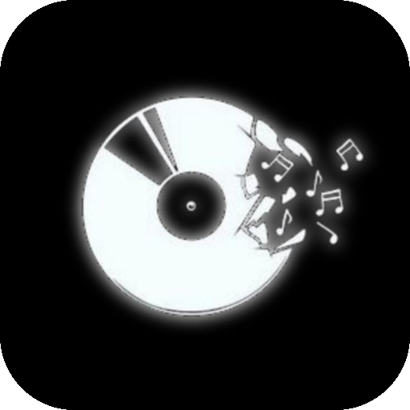

PLUGINS
Amplía Pokke.
Descarga plugins como ZIP e impórtalos a mano, o ábrelos directo en la app si ya la tienes instalada.
Los plugins son de terceros y ejecutan código dentro de la app. Instala solo los que vengan de autores en los que confíes.

pokke.PLUGINS
Descarga plugins como ZIP e impórtalos a mano, o ábrelos directo en la app si ya la tienes instalada.
Los plugins son de terceros y ejecutan código dentro de la app. Instala solo los que vengan de autores en los que confíes.
Elige cómo instalarlo:
↗Abrir en PokkeSe importa automáticamente si tienes la app instalada. ↓Descargar como ZIPImpórtalo manualmente desde la app.Pokke no respondió. Descarga el ZIP e impórtalo manualmente:
Instala solo plugins en los que confíes.